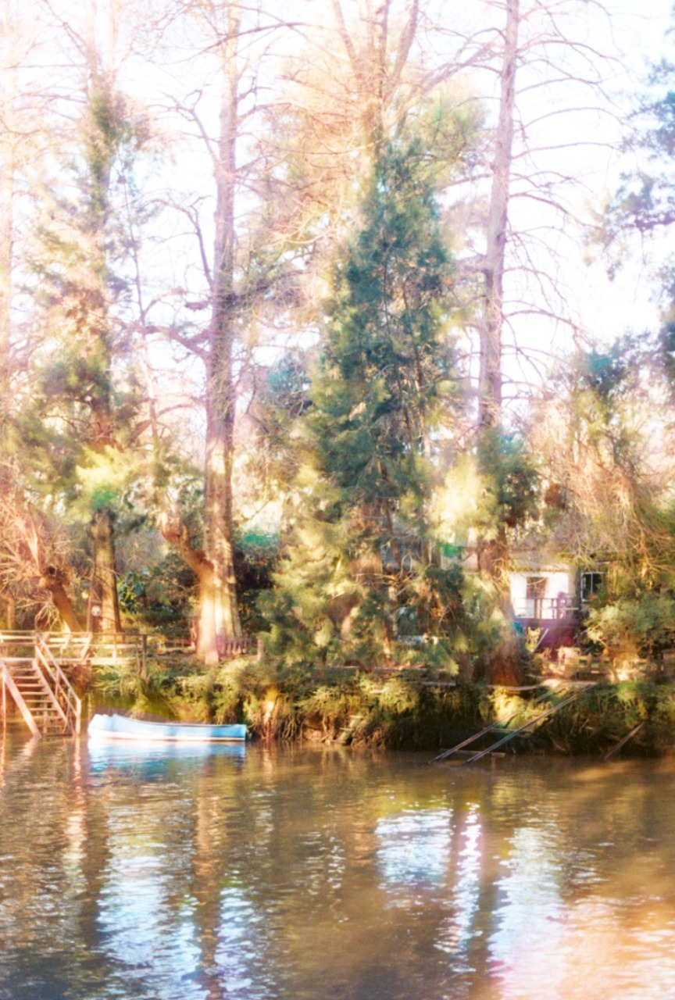
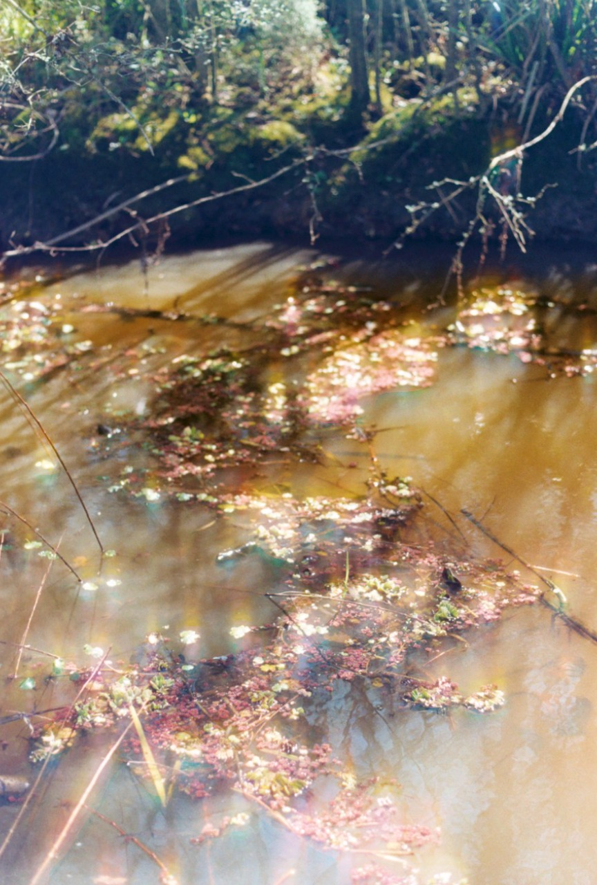
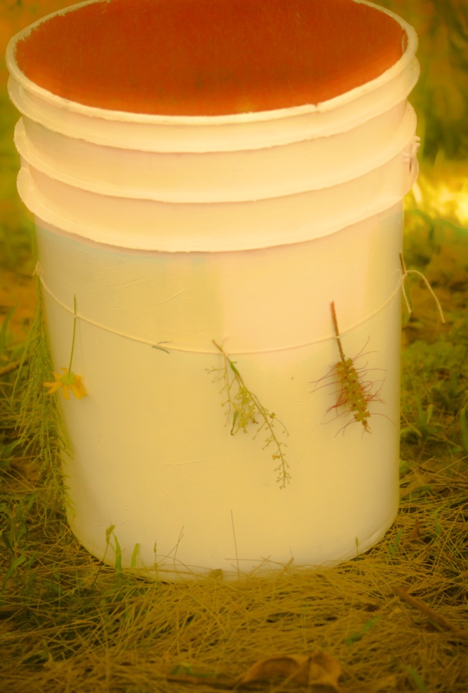
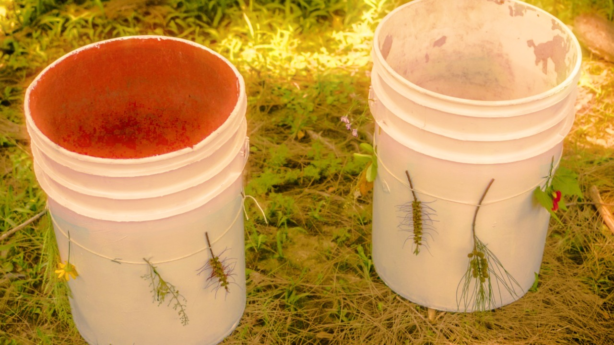

TERRITORIO: realizamos la performance en el Delta del Tigre, en una zona ubicada cerca de la intersección entre el Río Sarmiento y el Arroyo Abra Vieja. Elegimos esta locación porque nos pareció muy cercana al concepto de lo orgánico. La vegetación es abundante y variada y la cercanía al arroyo nos proporcionó la posibilidad de recolectar barro de esa misma zona. Todos los elementos orgánicos que utilizamos son de aquí.


RECIPIENTES: decidimos crear nuestros propios recipientes para el barro que utilizamos en la performance. Primero, pintamos de blanco unos baldes comunes y luego los intervenimos con flores y hojas de la zona atadas a un hilo que rodeaba al recipiente.